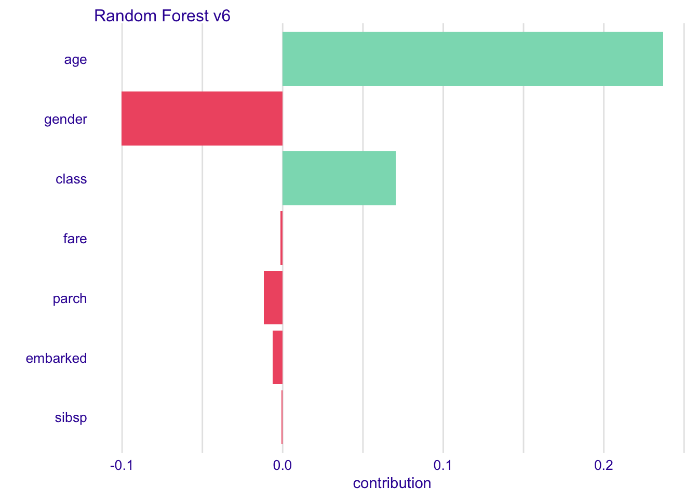
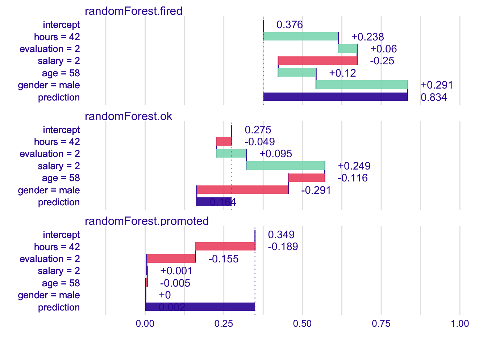

Chapter 9 Variable attributions
In the Section 8 we introduced a method for calculation of variable attributions for linear models. This method is accurate, based directly on the structure of the model. But for most popular machine learning models we cannot assume that they are linear nor even additive.
9.1 Intuition
For any model we may repeat the intuition presented in Section 8 to calculate variable contribution as shifts in expected model response after conditioning over consecutive variables. This intuition is presented in Figure ??.
Panel A shows distribution of model responses. The row all data shows the model response of the original dataset. The red dot stands for average is is an estimate of expencted model response \(E [f(x)]\).
Since we want to calculate effects of particular values of selected variables we then condition over these variables in a sequential manner.
The next row in panel A corresponds to average model prediction for observations with variable surface fixed to value 35. The next for corresponds to average model prediction with variables surface set to 35 and floor set to 1, and so on. The top row corresponds to model response for \(x^*\).
Black lines in the panel A show how prediction for a single point changes after coordinate \(i\) is repaced by the \(x^*_i\). But finaly we are not interestes in particular changes, not even in distributions but only in averages - expected model responses.
The most minimal form that shows important information is presented in the panel C. Positive values are presented with green bars while negative differences are marked with yellow bar. They sum up to final model prediction, which is denoted by a grey bar in this example.
![(fig:BDPrice4) Break Down Plots show how variables move the model prediction from population average to the model prognosis for a single observation. A) The last row shows distribution of model predictions. Next rows show conditional distributions, every row a new variable is added to conditioning. The first row shows model prediction for a single point. Red dots stand for averages. B) Blue arrows shows how the average conditional response change, these values are variables contributions. C) Only variable contributions are presented.](figure/bd_price_4.png)
Figure 9.1: (fig:BDPrice4) Break Down Plots show how variables move the model prediction from population average to the model prognosis for a single observation. A) The last row shows distribution of model predictions. Next rows show conditional distributions, every row a new variable is added to conditioning. The first row shows model prediction for a single point. Red dots stand for averages. B) Blue arrows shows how the average conditional response change, these values are variables contributions. C) Only variable contributions are presented.
9.2 Method
Again, let \(v(f, x^*, i)\) stands for the contribution of variable \(x_i\) on prediction of model \(f()\) in point \(x^*\).
We expect that such contribution will sum up to the model prediction in a given point (property called local accuracy), so \[ f(x^*) = baseline + \sum_{i=1}^p v(f, x^*, i) \] where \(baseline\) stands for average model response.
Note that the equation above may be rewritten as
\[ E [f(X)|X_1 = x_1^*, \ldots, X+p = x_p^*] = E[f(X)] + \sum_{i=1}^p v(f, x^*, i) \] what leads to quite natural proposition for \(v(f, x^*_i, i)\), such as
\[ v(f, x^*_i, i) = E [f(X) | X_1 = x_1^*, \ldots, X_i = x_i^*] - E [f(X) | X_1 = x_1^*, \ldots, X_{i-1} = x_{i-1}^*] \] In other words the contribution of variable \(i\) is the difference between expected model response conditioned on first \(i\) variables minus the model response conditioned on first \(i-1\) variables.
Such proposition fulfills the local accuracy condition, but unfortunatelly variable contributions depends on the ordering of variables.

Figure 9.2: (fig:ordering) Two different paths between average model prediction and the model prediction for a selected observation. Black dots stand for conditional average, red arrows stands for changes between conditional averages.
See for example Figure 9.2. In the first ordering the contribution of variable age is calculated as 0.01, while in the second the contribution is calculated as 0.13. Such differences are related to the lack of additivness of the model \(f()\). Propositions presented in next two sections present different solutions for this problem.
The approach for variable attribution presented in the Section ?? has the property of local accuracy, but variable contributions depends on the variable ordering.
The easiest way to solve this problem is to use two-step procedure. In the first step variables are ordered and in the second step the consecutive conditioning is applied to ordered variables.
First step of this algorithm is to determine the order of variables for conditioning. It seems to be reasonable to include first variables that are likely to be most important, leaving the noise variables at the end. This leads to order based on following scores
\[ score(f, x^*, i) = \left| E [f(X)] - E [f(X)|X_i = x^*_i] \right| \] Note, that the absolute value is needed as variable contributions can be both positive and negative.
Once the ordering is determined in the second step variable contributions are calculated as
\[ v(f, x^*_i, i) = E [f(X) | X_{I \cup \{i\}} = x_{I \cup \{i\}}^*] - E [f(X) | X_{I} = x_{I}^*] \] where \(I\) is the set of variables that have scores smaller than score for variable \(i\).
\[ I = \{j: score(f, x^*, j) < score(f, x^*, i)\} \]
The time complexity of the first step id \(O(p)\) where \(p\) is the number of variables and the time complexity of the second step is also \(O(p)\).
9.3 Example: Hire or Fire?
Let us consider a random forest model created for HR data. The average model response is \(\bar f(x) = 0.385586\). For a selected observation \(x^*\) the table below presents scores for particular variables.
| Ei f(X) | scorei | |
|---|---|---|
| hours | 0.616200 | 0.230614 |
| salary | 0.225528 | 0.160058 |
| evaluation | 0.430994 | 0.045408 |
| age | 0.364258 | 0.021328 |
| gender | 0.391060 | 0.005474 |
Once we determine the order we can calculate sequential contributions
| variable | cumulative | contribution |
|---|---|---|
| (Intercept) | 0.385586 | 0.385586 |
| * hours = 42 | 0.616200 | 0.230614 |
| * salary = 2 | 0.400206 | -0.215994 |
| * evaluation = 2 | 0.405776 | 0.005570 |
| * age = 58 | 0.497314 | 0.091538 |
| * gender = male | 0.778000 | 0.280686 |
| final_prognosis | 0.778000 | 0.778000 |
9.4 Pros and cons
Break Down approach is model agnostic, can be applied to any predictive model that returns a single number. It leads to additive variable attribution. Below we summarize key strengths and weaknesses of this approach.
Pros
- Break Down Plots are easy to understand and decipher.
- Break Down Plots are compact; many variables may be presented in a small space.
- Break Down Plots are model agnostic yet they reduce to intuitive interpretation for linear Gaussian and generalized models.
- Complexity of Break Down Algorithm is linear in respect to the number of variables.
Cons
- If the model is non-additive then showing only additive contributions may be misleading.
- Selection of the ordering based on scores is subjective. Different orderings may lead to different contributions.
- For large number of variables the Break Down Plot may be messy with many variables having small contributions.
9.5 Code snippets for R
In this section we present key features of the breakDown2 package for R (Biecek 2018a). This package covers all features presented in this chapter. It is available on CRAN and GitHub. Find more examples at the website of this package https://pbiecek.github.io/breakDown2/.
Model preparation
In this section we will present an example based on the HR dataset and Random Forest model (Breiman et al. 2018). See the Section 26.1 for more details.
library("DALEX2")
library("randomForest")
model <- randomForest(status ~ gender + age + hours + evaluation + salary, data = HR)
model##
## Call:
## randomForest(formula = status ~ gender + age + hours + evaluation + salary, data = HR)
## Type of random forest: classification
## Number of trees: 500
## No. of variables tried at each split: 2
##
## OOB estimate of error rate: 27.41%
## Confusion matrix:
## fired ok promoted class.error
## fired 2276 385 194 0.2028021
## ok 540 1250 431 0.4371905
## promoted 208 393 2170 0.2168892Model exploration with the breakDown2 package is performed in three steps.
1. Create an explainer - wrapper around model and validation data.
Since all other functions work in a model agnostic fashion, first we need to define a wrapper around the model. Here we are using the explain() function from DALEX2 package (Biecek 2018b).
2. Select an observation of interest.
Break Down Plots decompose model prediction around a single observation. Let’s construct a data frame with corresponding values.
new_observation <- data.frame(gender = factor("male", levels = c("male", "female")),
age = 57.7,
hours = 42.3,
evaluation = 2,
salary = 2)
predict(model, new_observation, type = "prob")## fired ok promoted
## 1 0.778 0.222 0
## attr(,"class")
## [1] "matrix" "votes"3. Calculate Break Down decomposition
The local_attributions() function calculates Break Down contributions for a selected model around a selected observation.
The result from local_attributions() function is a data frame with variable attributions.
library("iBreakDown")
bd_rf <- local_attributions(explainer_rf,
new_observation,
keep_distributions = TRUE)
bd_rf## contribution
## randomForest.fired: intercept 0.376
## randomForest.fired: hours = 42 0.240
## randomForest.fired: evaluation = 2 0.062
## randomForest.fired: salary = 2 -0.251
## randomForest.fired: age = 58 0.077
## randomForest.fired: gender = male 0.274
## randomForest.fired: prediction 0.778
## randomForest.ok: intercept 0.276
## randomForest.ok: hours = 42 -0.046
## randomForest.ok: evaluation = 2 0.086
## randomForest.ok: salary = 2 0.248
## randomForest.ok: age = 58 -0.069
## randomForest.ok: gender = male -0.274
## randomForest.ok: prediction 0.222
## randomForest.promoted: intercept 0.348
## randomForest.promoted: hours = 42 -0.194
## randomForest.promoted: evaluation = 2 -0.148
## randomForest.promoted: salary = 2 0.002
## randomForest.promoted: age = 58 -0.009
## randomForest.promoted: gender = male 0.000
## randomForest.promoted: prediction 0.000The generic plot() function creates a Break Down plots.

Add the plot_distributions = TRUE argument to enrich model response with additional information.

References
Biecek, Przemyslaw. 2018a. BreakDown: Model Agnostic Explainers for Individual Predictions. https://CRAN.R-project.org/package=breakDown.
Breiman, Leo, Adele Cutler, Andy Liaw, and Matthew Wiener. 2018. RandomForest: Breiman and Cutler’s Random Forests for Classification and Regression. https://CRAN.R-project.org/package=randomForest.
Biecek, Przemyslaw. 2018b. DALEX: Descriptive mAchine Learning Explanations. https://pbiecek.github.io/DALEX/.